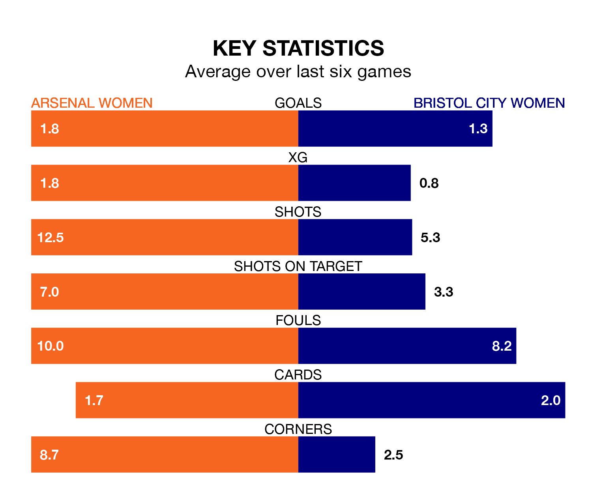

Relegation candidates Bristol City Women face a challenge away against high-flying Arsenal Women at Meadow Park on Sunday.
Bristol City Women are rooted to the bottom of the FA Women's Super League table, and have picked up just one win and three draws in their 17 games to date.
The Gunners, meanwhile, are third in the standings with 37 points, having won 12 and drawn one, and are nine points behind table-toppers Manchester City Women.
Arsenal are in reasonable form in the FA Women's Super League, with four wins and two losses from their last six games.
With no wins and a draw over that period, Bristol City's form is much worse – they have taken one point from 18, compared to the Gunners's 12.
With 37 goals in 17 games so far this season, the home side are scoring more than average in the league with 2.2 goals per game. And they are conceding fewer than average, letting in 18 goals at a rate of 1.1 per game.
The Robins, meanwhile, are below average scorers, with 1.2 goals per game, compared to a league average of 1.6. They have conceded 2.8 goals per game.
In the last 10 years, Arsenal and Bristol City have played each other on 15 occasions. Arsenal won 12 of them, Bristol City one, and they drew twice.
On average, the Gunners scored 3.8 goals and the Robins 0.8 in those matches.
Their last meeting was on November 9, when Arsenal won 3-1 at home.
Arsenal's last match was on March 24, a 3-1 win against Aston Villa Women, with Carlotte Wubben-Moy, Stina Blackstenius and Victoria Pelova getting the goals for the Gunners.
Bristol City lost 1-0 against Tottenham Hotspur Women last time out, also on March 24.
Updated: 14:47 (UTC), 09/04/24